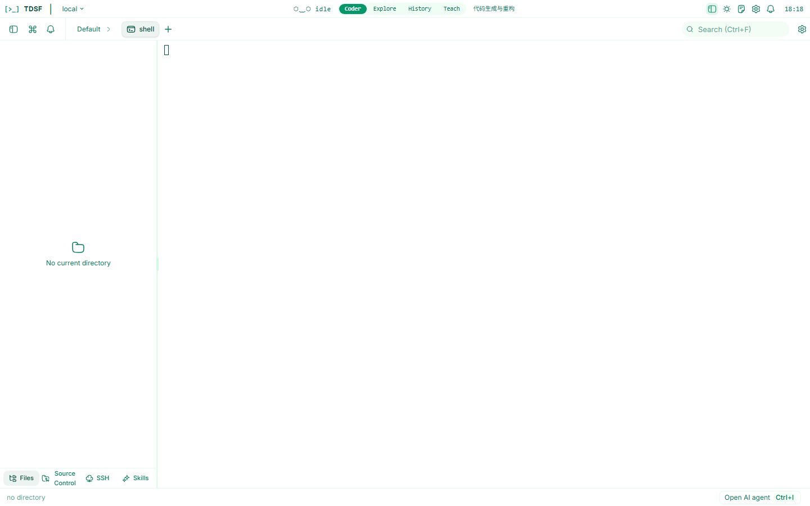
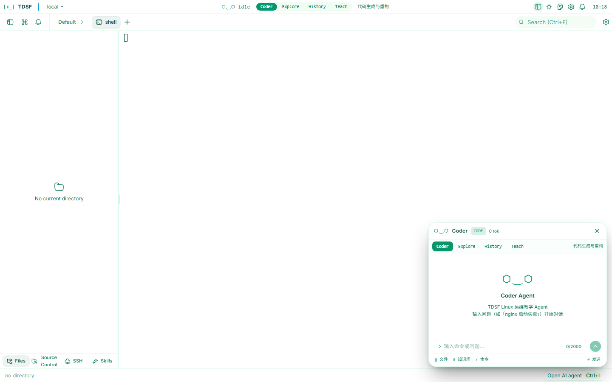
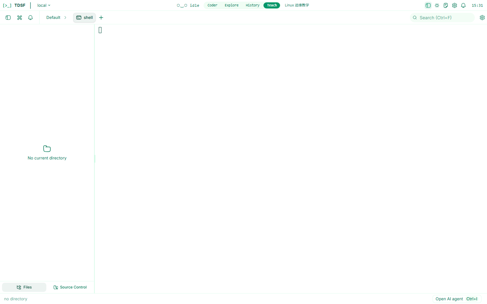
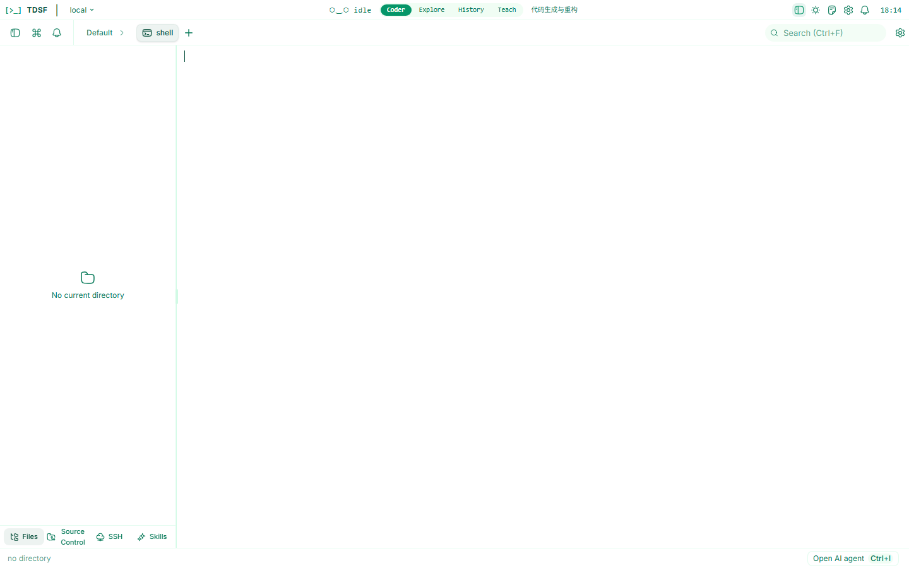

终端渲染池
基于 xterm.js 6 的高性能终端，5 槽位渲染池 + DormantRing 回收机制，本地 PTY 与 SSH 远程终端统一渲染、切换保活。
核心能力
从本地命令练习到远程服务器管理，从 AI 答疑到知识沉淀，无需在多个工具间来回切换。
基于 xterm.js 6 的高性能终端，5 槽位渲染池 + DormantRing 回收机制，本地 PTY 与 SSH 远程终端统一渲染、切换保活。
纯 Rust SSH 客户端（russh 0.61），支持密码 / 公钥认证、SFTP 文件浏览与编辑、TOFU 主机密钥审批，凭据存入系统密钥库。
9 个专职 Agent + PAOR 监督循环（Plan-Act-Observe-Reflect），主 Agent 自动分发任务，变更操作需审批，安全可控。
ChromaDB 向量检索 + SQLite FTS5 关键词检索双路并行，断网也能即时检索运维知识与历史案例。
4 层风险评估管道（L0-L4），AI 工具调用分级审批；SSRF 防护、路径拒绝列表、keyring 密钥存储守护安全边界。
16 套精心调校的主题，基于 CSS 变量的主题系统，终端配色与 UI 主题联动，支持亮/暗模式无缝切换。
系统架构
Rust 主进程负责系统级操作，React 前端专注 UI，Python Sidecar 承载 AI 推理，彼此通过标准化协议松耦合通信。
invoke()
Tauri IPC
JSON-RPC
界面预览
无边框窗口、自绘窗控、终端渲染池与 AI 面板在同一界面内协同工作。




技术栈